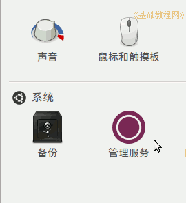
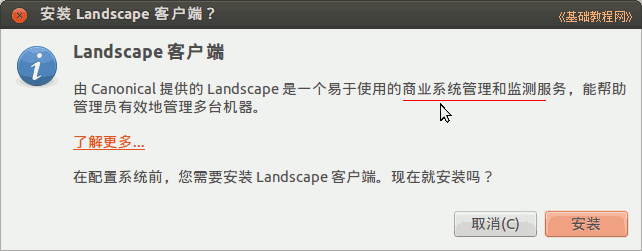
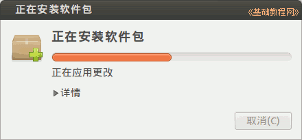
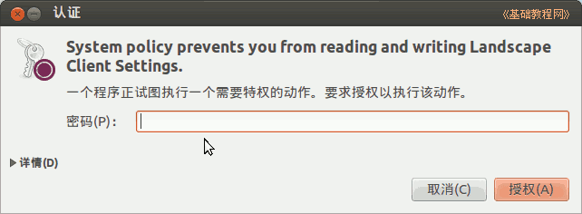
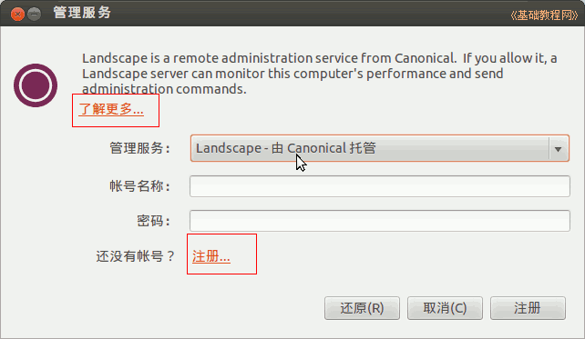

，打开程序，或者依次点“主按钮、所有程序、过滤结果、系统、系统设置、管理服务”；
，打开程序，或者依次点“主按钮、所有程序、过滤结果、系统、系统设置、管理服务”；Ubuntu 入门操作指南
作者：TeliuTe 来源：基础教程网
八十、管理服务 返回目录 下一课使用它，可以在浏览器的网页中远程管理Ubuntu操作系统的计算机，它是一个商业软件；
1、管理服务
1）点击左侧齿轮按钮，或者点击主按钮，在搜索中输入 contr ，打开程序，或者依次点“主按钮、所有程序、过滤结果、系统、系统设置、管理服务”；

2）首次打开会提示安装客户端程序，用来接收服务器发来的指令；

3）点“安装”按钮，输入密码后开始安装客户端；

4）运行“管理服务”客户端要输入验证密码；

5）接下来是询问管理服务器端在什么地方，可以选择 Canonical 托管，这个是试用版的，还需要注册一个试用 帐号；

6）然后就可以通过网页来管理远程Ubuntu系统，类似于用 PhpMyAdmin 来管理 MySQL 数据库；
更多详细请参考：http://imtx.me/archives/1702.html
本节学习了管理服务的基础知识，如果你成功地完成了练习，请继续学习下一课内容；
本教程由86团学校TeliuTe制作|著作权所有
基础教程网：http://teliute.org/
美丽的校园……
转载和引用本站内容，请保留版权信息和本站链接。